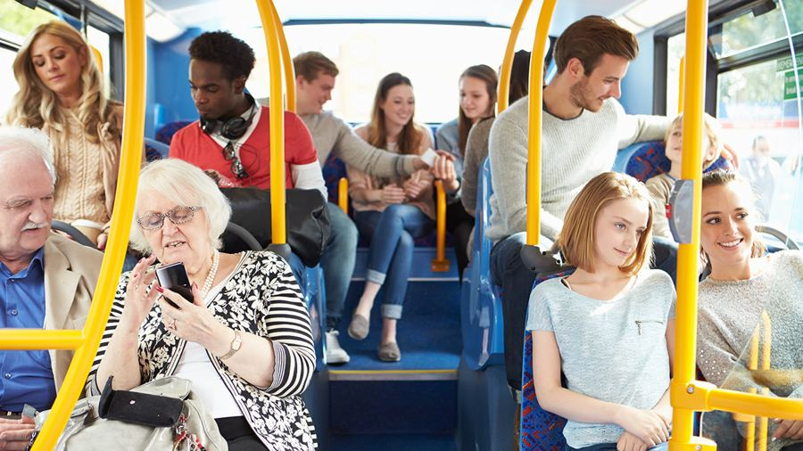
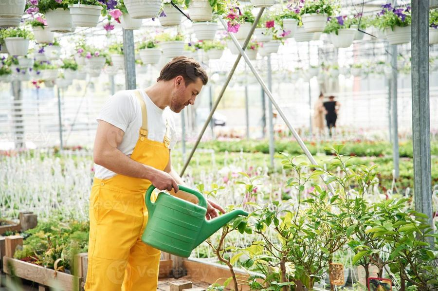
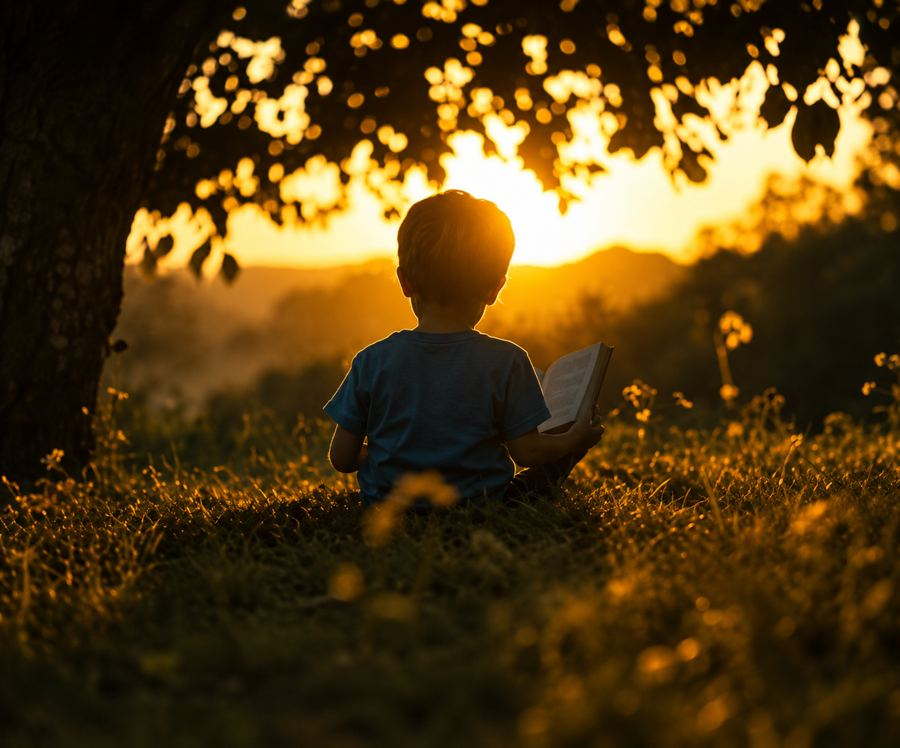
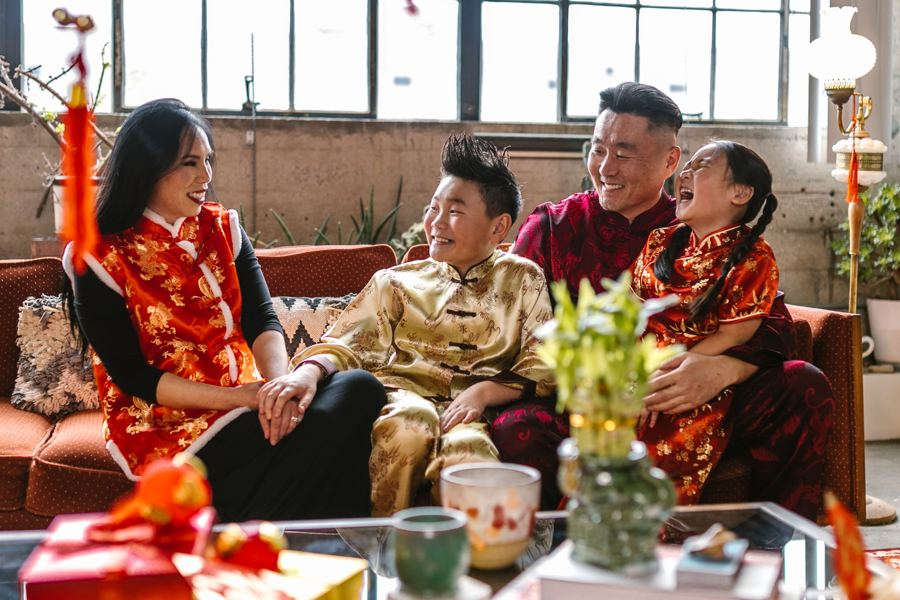

Aptis Speaking
Part 1: In this part, I am going to ask you three short questions about yourself and your interests. You will have 30 seconds to reply to each question.
1. What do you like to do with your friends?
=> I like going to the café near my house. It is fun and relaxing. Here we can drink coffee, listen to music and chat. Sometimes, I like running in the park with my friends. It’s fun and good for my health. Sometimes we also play badminton together on weekends. These activities help me stay close to my friends.
2. How was your day?
=> My day was good. Today I went to the movies with my family. It was amazing because we could see a good movie and share happy moments together. We watched a comedy film and laughed a lot together. It was a nice way to end a busy week.
3. Tell me about your journey here?
=> Today I came here by car. I left home early, at 5AM because I live far from HN. I came here at 7AM. The traffic was heavy. The streets were crowded with people and means of transport. I felt a bit sleepy because I woke up so early. Still, I was glad to arrive on time.
Part 2: In this part, I'm going to ask you to describe a picture. Then I will ask you two questions about it. You will have 45 seconds for each response.
 |
1. Describe the picture => In this picture, I can see many people on the bus. There are both young and old people. Some people are talking. Some are using mobile phones and some are looking outside. They are wearing casual clothes and look happy. I think they are enjoying their time. The bus looks clean and comfortable. I like picture because |
2. What are your thoughts on using public transportation?
=> I think public transportation is affordable for students and people with low income. They can save money for other things. Besides, it is good for the environment because it can reduce air pollution and traffic jams. For example, I sometimes take the bus to work instead of driving my motorbike. It also helps reduce the amount of traffic on the road.
3. Some people argue that people shouldn't use public transportation too much. Do you agree or disagree? What are your reasons?
=> Some people argue that people shouldn’t use public transportation too much because it is not convenient and sometimes it can cause traffic jams because it is big. However, I think it is good for people with low income and for the environment. In my opinion, more people should try using it, especially in big cities. This could help reduce pollution in the long run.
Part 3: In this part, I'm going to ask you to compare two pictures, and I will then ask you two questions about them. You will have 45 seconds for each response.
1. Tell me what you can see in these two pictures.
 |
 |
=> the two pictures show people in different places
In the first picture, I can see a man. He is about 30. He is watering the plants in the garden.
In the second picture, I can see a boy. He is about 4 or 5. He is sitting on the ground in a forest. He is reading a book. The sun is shing. Both people seem to enjoy spending time outdoors. It shows how nature can bring peace to different generations.
2. Which activity do you prefer?
=> both activities have different attractions, depending on people’s interests. Some people like gardening because they can see plants grow every day. For me, I prefer reading books because it is enjoyable and useful. It helps me relax after a busy day and broaden my mind. For example, I always bring a book with me when I travel. It helps me pass the time and learn new things.
3. Do you think being close to nature is important?
=> Yes, I do. Being close to nature is important because it is relaxing and good for our health. It helps people reduce stress and stay healthy. They can enjoy fresh air and sunlight. For example, I try to visit a park at least once a week. It always makes me feel more relaxed afterward.
Part 4: In this part, I'm going to show you a picture and ask you three questions. You will have one minute to think about your answers before you start speaking. You will have two minutes to answer all three questions.

Tell me about an experience related to an important culture.
What do people usually do?
Are important cultures important to people? Why?
=> Regarding the first question, today I'm going to talk about an experience related to an important culture. Last year, I celebrated Lunar New Year with my family. We decorated our house, cooked traditional food and visited our relatives.
Turning to the second question, people usually clean their houses, prepare special meals and spend time with their families. They also give lucky money to children.
About the last question, I think important cultures are very important because they help people remember their traditions. They also bring families and communities closer together. For example, my grandmother always cooks banh chung with the whole family. I really enjoy this tradition because it brings everyone together. I hope to keep celebrating it every year.